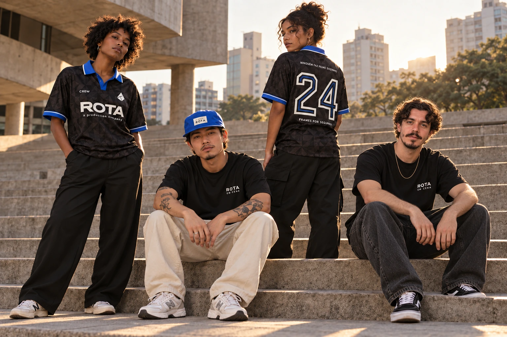
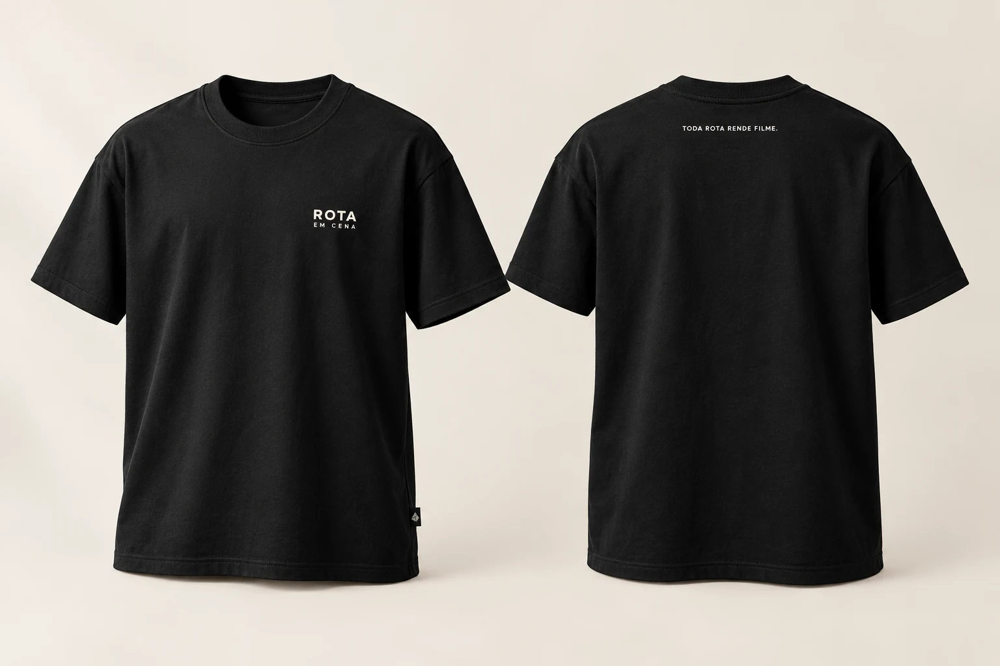

ROTA em cena.
A assinatura da linha de trabalho.
UMA COLEÇÃO DA ROTA
Do primeiro take
até onde a vida levar.

Ninguém faz
filme sozinho.
01 / O GUARDA-ROUPA DA CREW
Explore cada peça.
Veja a proposta de produção.
Estudos visuais. As imagens de campanha são conceitos gerados com IA; não representam peças já fabricadas ou ensaios realizados.
02 / GENTE QUE CRIA JUNTO
Na rua, no set e lá fora. Um ensaio coletivo sobre quem cria junto, com a nova linha básica, acessórios e os casacos em azul ROTA.
Preto fosco, assinatura discreta e espaço para trabalhar.
Em movimento e Location encontram a mesma paleta.
Ver as peças de frente e costas ↓Ensaio conceitual. Todas as imagens são ilustrativas, geradas por IA; não representam um ensaio realizado ou peças já fabricadas.
03 / O MUNDO É A LOCAÇÃO
Frente e costas no mesmo cenário. Quatro peças no corpo, com mangas, barra e estampas à vista.
Imagens ilustrativas geradas por IA. À esquerda, frente; à direita, costas. A visualização no corpo complementa os mockups e não substitui a amostra física.
04 / ESSENCIAIS PARA A DIÁRIA
Uma básica pensada para o trabalho: modelagem confortável, preto fosco e identidade em pequena escala.

16 / CAMISETA DE SET
Algodão penteado de 200–220 g/m² como proposta, caimento regular confortável e estampa fosca. No peito, ROTA / EM CENA. Na nuca, TODA ROTA RENDE FILME.
A gramatura mais leve que a linha oversized é um ponto de partida. O protótipo precisa passar por uma diária de uso, lavagem e prova de mobilidade.
A assinatura da linha de trabalho.
Uma frase curta, com leitura de perto.
Para a crew, o encontro e o boné azul.
Uma assinatura possível para futuras peças.
05 / OS DETALHES TAMBÉM CONTAM
Dois bonés e um gorro. Aplicações pequenas, texturas diferentes e a mesma identidade.
17 / BONÉ EM CENA
Proposta: sarja de algodão, seis painéis sem estrutura rígida, aba curva e ajuste por fita. Bordado pequeno em branco-osso. Provar profundidade da copa, conforto e solidez da cor.
18 / BONÉ NA MESMA ROTA
Proposta: nylon leve, cinco painéis, aba preta e etiqueta tecida frontal. Validar ventilação e ajuste. Proteção UV e repelência não ensaiadas.
19 / GORRO PRISMA
Proposta: malha canelada em mistura de algodão e acrílico a definir, formato curto com dobra. Etiqueta tecida preto e branco-osso. Testar elasticidade, toque, pilling e recuperação após lavagem.
Mockups ilustrativos gerados por IA. Composição, medidas, aviamentos e aplicações dependem de desenvolvimento e amostra física.
Baixar direção e especificações da rodada 03 ↗06 / ESTUDOS DE COR & EXPRESSÃO
A ROTA também está no traço, na frase e no repertório. Quatro novas direções para experimentar a coleção.
Estudos conceituais gerados com IA, com frente, costas e aplicação no corpo. As cores e artes precisam de aprovação em amostra física.
Baixar direção de arte desta rodada ↗ON LOCATION / OFF SCRIPT
Tem coisa que só acontece
quando a gente se encontra.
07 / DA IDEIA À PEÇA
Uma base para conversar com a confecção.
Especificações propostas, sujeitas a amostra.
Camisetas ilustradas em meia-malha 100% algodão penteado, com gramatura-alvo de 240–260 g/m². A básica de set propõe 200–220 g/m². Caimento amplo, ombro deslocado e gola de ribana.
Serigrafia de cores chapadas como primeira opção. Provar toque, cobertura e fidelidade das cores no tecido real.
Felpa de aproximadamente 350 g/m² como ponto de partida, com proposta de 80% algodão e 20% poliéster. Modelagem ampla e acabamento de punhos e barra.
Bordado nas assinaturas pequenas; serigrafia nas ilustrações. Ajustar densidade e estabilização na amostra.
Nylon ripstop de aproximadamente 100–130 g/m², com acabamento repelente à água como proposta. Modelagem confortável para sobreposição.
Transfer ou tinta compatível com o tecido e seu acabamento. Ensaiar aderência e temperatura antes do lote.
A proposta dos casacos é de proteção contra vento, com acabamento repelente à água a definir em amostra. Isso não equivale a uma peça impermeável. Desempenho ainda não testado.
Uma versão impermeável exige especificar tecido ou membrana adequados, construção das costuras e vedações, além de testar a peça final. Essa evolução deve ser cotada separadamente.
Referência técnica: construção de uma peça impermeável, GORE-TEX ↗. Não há indicação de parceria ou uso desse material na coleção.
08 / FAZER SAIR DO PAPEL
Como financiar ainda está em estudo.
A coleção também pode nascer de investimento próprio.
A ROTA financia os protótipos e um lote inicial enxuto. A equipe define as peças prioritárias e assume a compra e o estoque.
Decisão-chaveQuanto investir e quais peças entram primeiro.
Depois de aprovar as amostras e obter orçamentos, uma pré-venda pode validar demanda e ajudar a financiar a fabricação.
Decisão-chavePreço, lote mínimo, prazos e condições antes de abrir pedidos.
Marcas e parceiros de produção podem participar com recursos ou serviços, mediante uma proposta de contrapartidas.
Decisão-chaveQual apoio faz sentido e o que a ROTA oferece em troca.
Peças, cores e grade de tamanhos.
Modelagem, tecido e aplicação reais.
Custo completo, mínimo e prazo.
Após aprovar amostra e investimento.
Sem meta de captação, preços ou prazo de lançamento definidos. Esta apresentação apoia a decisão interna; não recebe pagamentos nem pedidos.